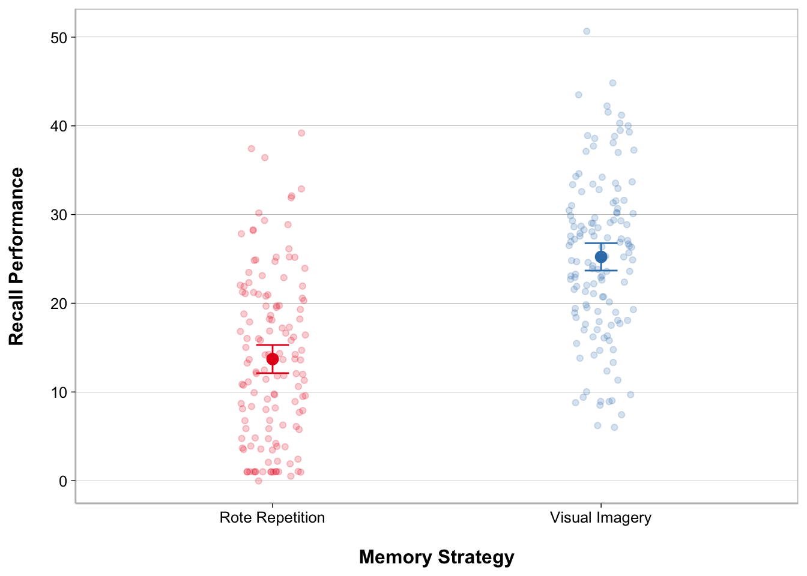
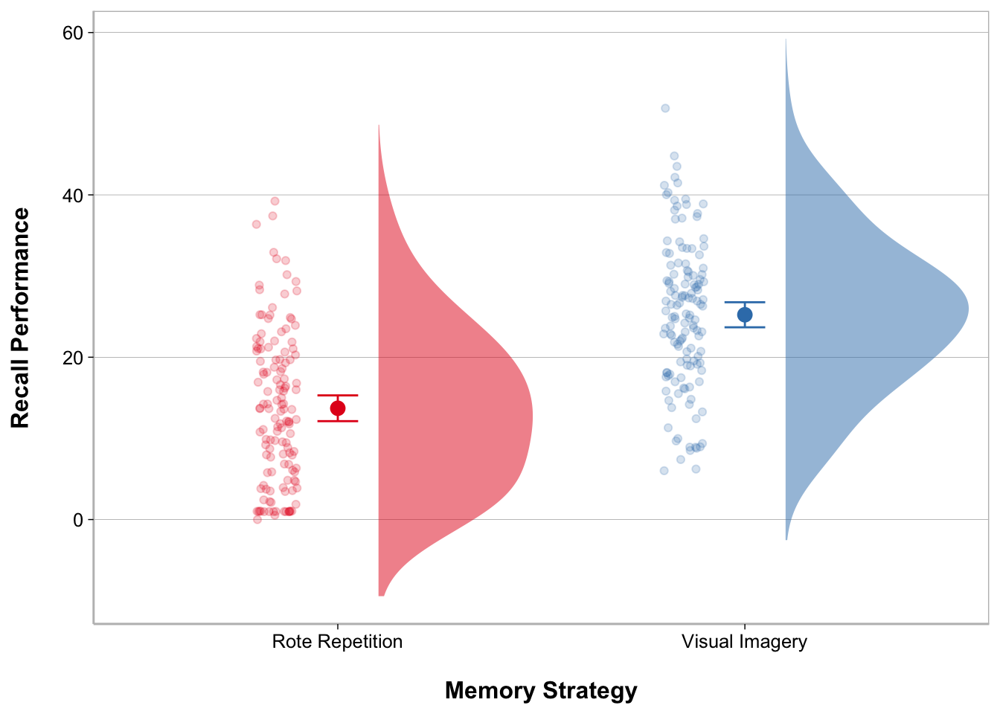
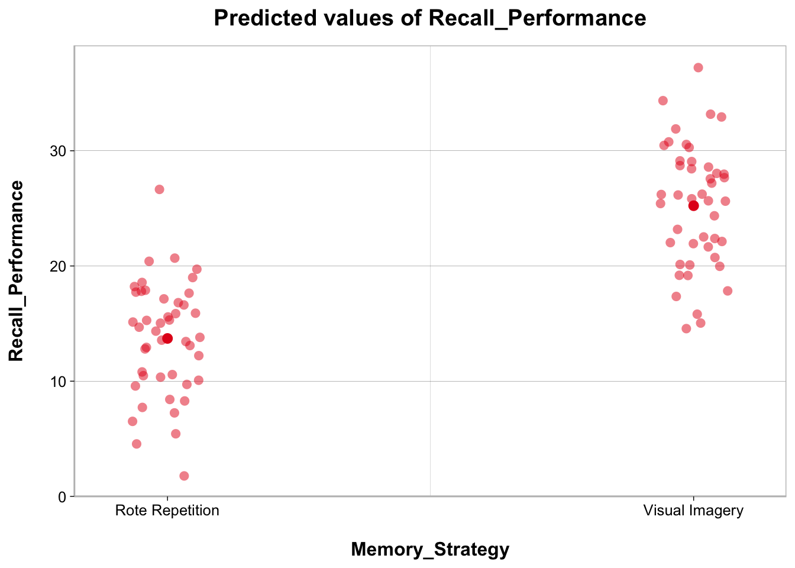
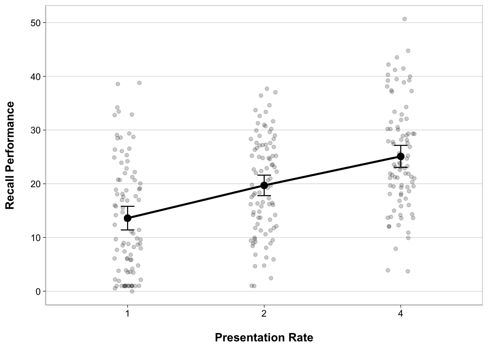
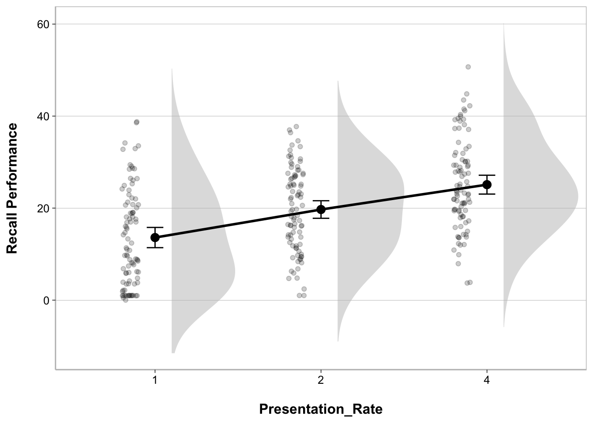
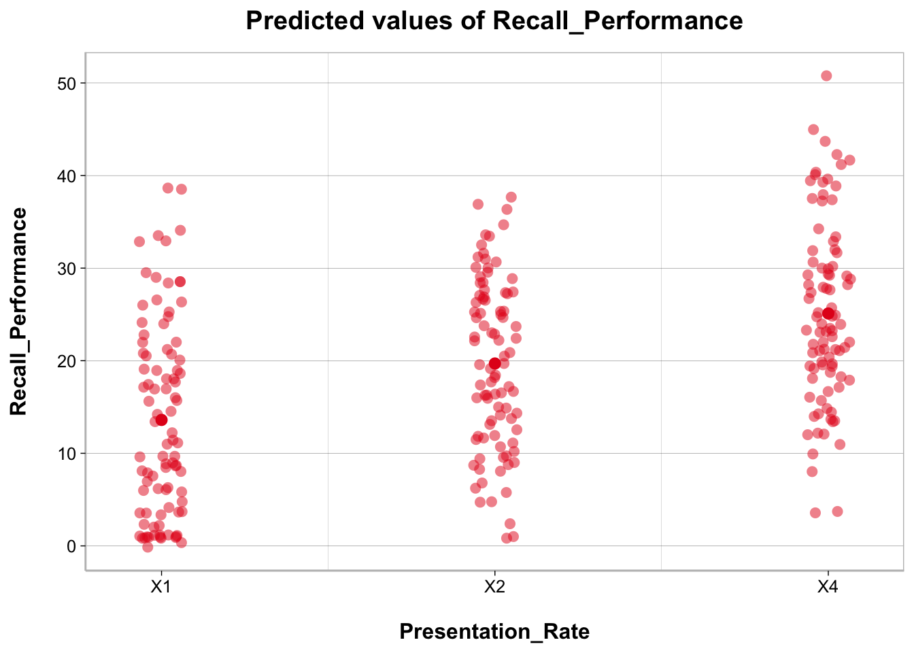
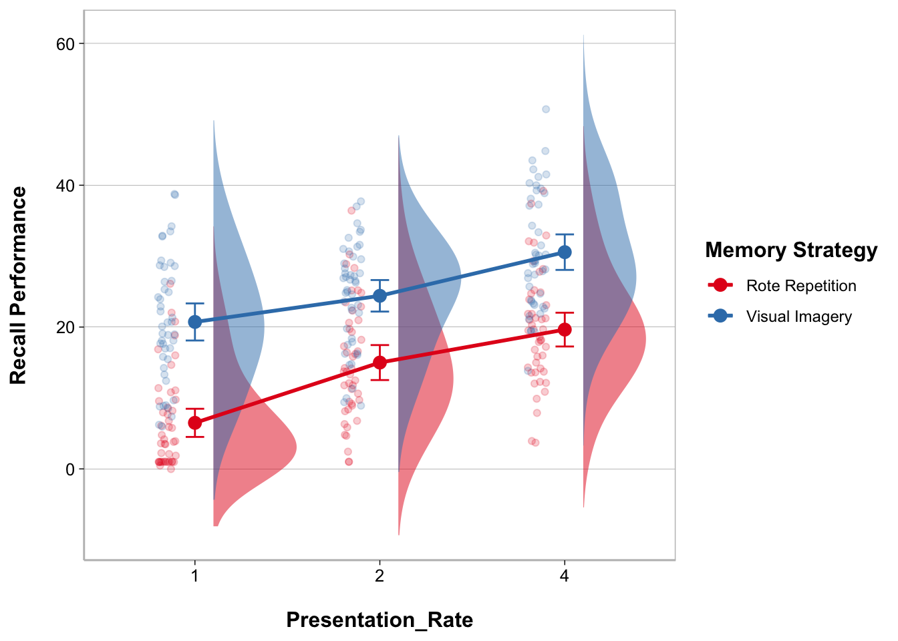
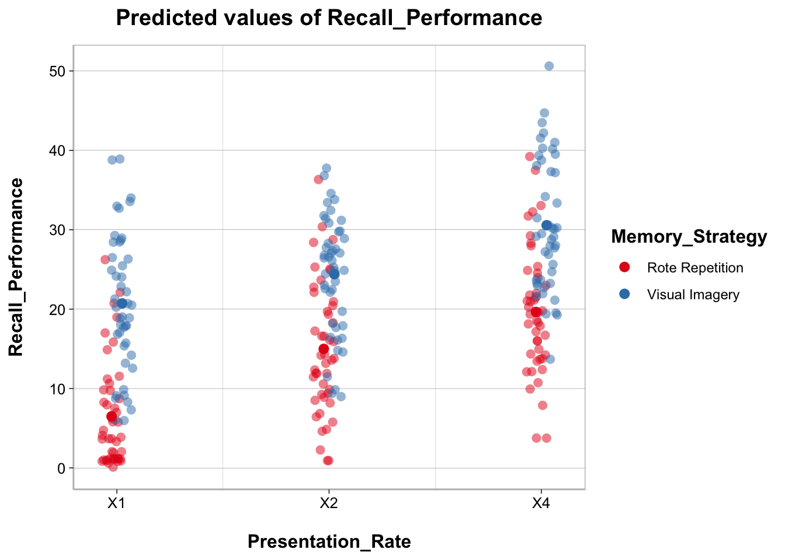

theme_spacious <- function(font.size = 14, bold = TRUE){
key.size <- trunc(font.size * .8)
if (bold == TRUE) {
face.type <- "bold"
} else {
face.type <- "plain"
}
theme(text = element_text(size = font.size),
axis.title.x = element_text(margin = margin(t = 15, r = 0,
b = 0, l = 0),
face = face.type),
axis.title.y = element_text(margin = margin(t = 0, r = 15,
b = 0, l = 0),
face = face.type),
legend.title = element_text(face = face.type),
legend.spacing = unit(20, "pt"),
legend.text = element_text(size = key.size),
plot.title = element_text(face = face.type, hjust = .5,
margin = margin(b = 10)),
plot.caption = element_text(hjust = 0, size = key.size,
margin = margin(t = 20)),
strip.background = element_rect(fill = "white", color = "white"),
strip.text = element_text(color = "black",
face = face.type))
}
output_theme <- theme_linedraw() +
theme_spacious(font.size = 12) +
theme(panel.border = element_rect(color = "gray"),
axis.line.x = element_line(color = "gray"),
axis.line.y = element_line(color = "gray"),
panel.grid.major.x = element_blank(),
panel.grid.minor.y = element_blank())
theme_set(output_theme)16 ANOVA
Suppose we were interested in memory and wanted to find out if recall can be improved by using visual imagery while memorizing a list of words. In addition to the memory strategy that is used, say we were also interested in the effect presentation rate on memory and if that interacted with memory strategy.
To investigate this, we conducted an experiment to look at the effect of Memory Strategy and Presentation Rate on Recall Performance using a 2 x 3 mixed-factorial design with Memory Strategy as a between-subjects factor (Rote Repetition vs. Visual Imagery) and Presentation Rate as a within-subjects factor (1 second, 2 seconds, and 4 seconds).
In every condition subjects were told to use a certain strategy while memorizing a list of 50 words presented sequentially and were asked to freely recall as many words as possible immediately after the last presented word. Every subject performed the memory task three times at the 3 different presentation rates, the order of the tasks was counterbalanced.
ggplot2 Theme
It can be nice to set a global ggplot2 theme that is applied to all ggplots. Here is some code on how to 1) create a custom theme e.g., theme_spacious and 2) how to set the global theme based on some combination of custom and template themes.
Table Theme
It can also be nice to customize how tables from statistical analyses are displayed. Here is some code on how to define a table theme using the knitr and kableExtra packages. You will see that we will pass tables to table_theme() with some customization for the number of digits to round to, adding a table title, and footnotes.
table_theme <- function(x, digits = 3, title = NULL, note = NULL) {
kable(x, digits = digits, caption = title, row.names = FALSE) |>
kable_classic(position = "left") |>
kable_styling(full_width = FALSE, position = "left") |>
footnote(general = note)
}Specify factor levels
When dealing with categorical variables for statistical analyses in R, it is usually a good idea to define the order of the categories as this will by default determine which category is treated as the reference (comparison group).
Let’s set factor levels for Memory Strategy and Presentation Rate
Remember you can use colnames() to get the columns in a data frame and unique() to evaluate the unique values in a column.
t-test
A t-test can be performed to test whether a difference between 2 means is statistically significant. There are three general types of t-tests.
One-sample t-test: Used to compare a sample mean to a population mean.
Two-sample t-test for independent samples: Used to compare means from two different groups of subjects (between-subject factor).
Two-sample t-test for dependent samples: Used to compare means from two conditions with the same subjects (within-subject factor).
The t.test() function can be used to compute any of these t-tests.
t-test - independent samples
We can perform a two-sample t-test for independent samples to compare recall performance for the group of subjects assigned to the rote repetition condition vs. those assigned to the visual imagery condition.
t_ms <- t.test(recall_data$Recall_Performance ~
recall_data$Memory_Strategy,
var.equal = TRUE)We can then use model_parameters() , from parameters, to get the test statistics and cohens_d() , from modelbased to get the standardized effect size estimate.
model_parameters(t_ms) |>
select(-Method, -Alternative) |>
table_theme()| Parameter | Group | Mean_Group1 | Mean_Group2 | Difference | CI | CI_low | CI_high | t | df_error | p |
|---|---|---|---|---|---|---|---|---|---|---|
| recall_data$Recall_Performance | recall_data$Memory_Strategy | 13.71 | 25.23 | -11.52 | 0.95 | -13.724 | -9.316 | -10.289 | 268 | 0 |
cohens_d(t_ms) |>
select(-CI) |>
table_theme()| Cohens_d | CI_low | CI_high |
|---|---|---|
| -1.252 | -1.512 | -0.99 |
t-test - dependent samples
We can perform a two-sample t-test for dependent samples to compare the three presentation rate conditions because this variable was a within-subject factor.
To do so, we need to create three different data frames for each of the pairwise comparisons (there is probably a simpler way to do this but this is a good opportunity to demonstrate a dplyr function). We can use filter() from dplyr to do this.
data_pr_1v2 <- filter(recall_data,
Presentation_Rate == 1 | Presentation_Rate == 2)
data_pr_1v4 <- filter(recall_data,
Presentation_Rate == 1 | Presentation_Rate == 4)
data_pr_2v4 <- filter(recall_data,
Presentation_Rate == 2 | Presentation_Rate == 4)
t_pr_1v2 <- t.test(data_pr_1v2$Recall_Performance ~
data_pr_1v2$Presentation_Rate,
var.equal = TRUE, paired = TRUE)
t_pr_1v4 <- t.test(data_pr_1v4$Recall_Performance ~
data_pr_1v4$Presentation_Rate,
var.equal = TRUE, paired = TRUE)
t_pr_2v4 <- t.test(data_pr_2v4$Recall_Performance ~
data_pr_2v4$Presentation_Rate,
var.equal = TRUE, paired = TRUE)model_parameters(t_pr_1v2) |>
select(-Method, -Alternative) |>
table_theme()| Parameter | Group | Difference | t | df_error | p | CI | CI_low | CI_high |
|---|---|---|---|---|---|---|---|---|
| data_pr_1v2$Recall_Performance | data_pr_1v2$Presentation_Rate | -6.093 | -5.906 | 89 | 0 | 0.95 | -8.143 | -4.043 |
cohens_d(t_pr_1v2) |>
select(-CI) |>
table_theme()| Cohens_d | CI_low | CI_high |
|---|---|---|
| -0.623 | -0.847 | -0.395 |
model_parameters(t_pr_1v4) |>
select(-Method, -Alternative) |>
table_theme()| Parameter | Group | Difference | t | df_error | p | CI | CI_low | CI_high |
|---|---|---|---|---|---|---|---|---|
| data_pr_1v4$Recall_Performance | data_pr_1v4$Presentation_Rate | -11.496 | -10.278 | 89 | 0 | 0.95 | -13.718 | -9.273 |
cohens_d(t_pr_1v4) |>
select(-CI) |>
table_theme()| Cohens_d | CI_low | CI_high |
|---|---|---|
| -1.083 | -1.342 | -0.821 |
model_parameters(t_pr_2v4) |>
select(-Method, -Alternative) |>
table_theme()| Parameter | Group | Difference | t | df_error | p | CI | CI_low | CI_high |
|---|---|---|---|---|---|---|---|---|
| data_pr_2v4$Recall_Performance | data_pr_2v4$Presentation_Rate | -5.402 | -4.694 | 89 | 0 | 0.95 | -7.689 | -3.116 |
cohens_d(t_pr_2v4) |>
select(-CI) |>
table_theme()| Cohens_d | CI_low | CI_high |
|---|---|---|
| -0.495 | -0.713 | -0.275 |
ANOVA
Depending on your factor design, you may need to perform different types of ANOVAs. We have a 2 x 3 mixed-factorial design and so will ultimately want to perform a Two-way ANOVA with a between-subject and a within-subject factors. However, for the sake of this exercise, let’s walk through the different types of ANOVAs.
One-way between-subject ANOVA
One-way within-subject ANOVA (also called repeated measures ANOVA)
Two-way mixed-factor ANOVA
In R, there are some different ways to conduct an ANOVA. We will use the afex package to conduct ANOVAs with aov_car().
One-Way Between-Subject ANOVA
A one-way between-subject ANOVA is conducted when there is only one factor (between-subject) in the study design.
Model
anova_bs <- aov_car(Recall_Performance ~
Memory_Strategy + Error(Subject),
data = recall_data)Warning: More than one observation per design cell, aggregating data using `fun_aggregate = mean`.
To turn off this warning, pass `fun_aggregate = mean` explicitly.Contrasts set to contr.sum for the following variables: Memory_Strategy
Note
For between-subject designs, when there are multiple rows per subject in the data (due to the presence of a within-subject factor), performance needs to be averaged across the rows per subject. The Error(Subject) specification in the formula tells aov_car() what column name is that contain subject ids.
Using parameters and modelbased
You can use model_parameters() to get an ANOVA table. You should specify type = 3 to get Type III sum of squares. You can also request to obtain omega-squared (or eta-squared) effect size estimate.
model_parameters(anova_bs, type = 3,
effectsize_type = "omega", ci = .95) |>
select(-Method) |>
table_theme()| Parameter | Sum_Squares | df | Mean_Square | F | p | Omega2 | Omega2_CI_low | Omega2_CI_high |
|---|---|---|---|---|---|---|---|---|
| (Intercept) | 34115.983 | 1 | 34115.983 | 1285.352 | 0 | NA | NA | NA |
| Memory_Strategy | 2985.984 | 1 | 2985.984 | 112.500 | 0 | 0.553 | 0.441 | 1 |
| Residuals | 2335.709 | 88 | 26.542 | NA | NA | NA | NA | NA |
You can use estimate_contrasts(), from modelbased, to get post-hoc comparisons.
estimate_contrasts(anova_bs, contrast = "Memory_Strategy",
p_adjust = "tukey") |>
table_theme()| Level1 | Level2 | Difference | CI_low | CI_high | SE | df | t | p |
|---|---|---|---|---|---|---|---|---|
| Rote Repetition | Visual Imagery | -11.52 | -13.678 | -9.362 | 1.086 | 88 | -10.607 | 0 |
Using modeloutput
My modeloutput package provides a way to display ANOVA tables in output format similar to other statistical software packages like JASP or SPSS. Add anova_tables(contrast = "Memory_Strategy") to get a table for post-hoc comparisons.
anova_tables(anova_bs, contrast = "Memory_Strategy")| ANOVA Table: Recall_Performance | |||||||
| Term | SS | df | MS | F | p | η2 | ω2 |
|---|---|---|---|---|---|---|---|
| (Intercept) | 34,115.983 | 1.000 | 34,115.983 | 1,285.352 | <0.001 | NA | NA |
| Memory_Strategy | 2,985.984 | 1.000 | 2,985.984 | 112.500 | <0.001 | 0.561 | 0.553 |
| Residuals | 2,335.709 | 88.000 | 26.542 | NA | NA | NA | NA |
| Model: aov_car(Recall_Performance ~ Memory_Strategy | |||||||
| N = 90 | |||||||
| none | |||||||
| Post-hoc Comparisons: Memory_Strategy | ||||||||
| Level 1 | Level 2 | Difference | CI 95% | SE | df | t | p | Cohen's D |
|---|---|---|---|---|---|---|---|---|
| Rote Repetition | Visual Imagery | −11.520 | [-13.678, -9.362] | 1.086 | 88 | −10.607 | <0.001 | −1.490 |
| p-values are uncorrected. | ||||||||
Figures - ggplot2
The most customizable way to plot model results is using the ggplot2 package.
ggplot(recall_data, aes(x = Memory_Strategy, y = Recall_Performance,
color = Memory_Strategy)) +
geom_point(position = position_jitter(width = .1), alpha = .2) +
stat_summary(fun = mean, geom = "point", size = 3) +
stat_summary(fun.data = mean_cl_normal, geom = "errorbar",
width = .1) +
labs(x = "Memory Strategy", y = "Recall Performance") +
scale_color_brewer(palette = "Set1") +
guides(color = "none")
Figures - raincloud plot
My modeloutput function has a geom_flat_violin() function to create the cloud part of the raincloud plot. There are some other modifications that have to be made to other elements of the ggplot as well.
ggplot(recall_data, aes(x = Memory_Strategy, y = Recall_Performance,
color = Memory_Strategy, fill = Memory_Strategy)) +
geom_flat_violin(position = position_nudge(x = .1, y = 0),
adjust = 1.5, trim = FALSE,
alpha = .5, colour = NA) +
geom_point(aes(as.numeric(Memory_Strategy) - .15),
position = position_jitter(width = .05), alpha = .2) +
stat_summary(fun = mean, geom = "point", size = 3) +
stat_summary(fun.data = mean_cl_normal, geom = "errorbar",
width = .1) +
labs(x = "Memory Strategy", y = "Recall Performance") +
scale_color_brewer(palette = "Set1") +
scale_fill_brewer(palette = "Set1") +
guides(fill = "none", color = "none")Warning: Using the `size` aesthetic with geom_polygon was deprecated in ggplot2 3.4.0.
ℹ Please use the `linewidth` aesthetic instead.
Figures - sjPlot
The main package in R to create and customize plots is ggplot2. However, there is definitely a bit of a learning curve to ggplot2. Instead, the sjPlot package offers convenient ways to plot the results of statistical analyses using plot_model().
plot_model(anova_bs, type = "pred", show.data = TRUE, jitter = TRUE)$Memory_Strategy
One-Way Within-Subject ANOVA
A one-way within-subject ANOVA (or repeated measures ANOVA) is conducted when there is only one factor (within-subject) in the study design.
Statistically, the main difference between a between-subject factor and a within-subject factor is what goes into the error term. Recall that within-subject factor designs are more powerful. One reason for this is that the Error or Residual term in the model becomes smaller because Subject gets entered into the model as a variable (we are modelling the effect of differences between subjects). We need to specify the structure of the residual term for within-subject designs, which usually just involves specifying the column that identifies the subject id column.
In aov_car() we can specify the error term as Error(Subject/Within-Subject Factor).
anova_ws <- aov_car(Recall_Performance ~
Presentation_Rate +
Error(Subject/Presentation_Rate),
data = recall_data)Using parameters and modelbased
You can use model_parameters() to get an ANOVA table. You should specify type = 3 to get Type III sum of squares. You can also request to obtain omega-squared (or eta-squared) effect size estimate.
model_parameters(anova_ws, type = 3,
effectsize_type = "omega", ci = .95) |>
select(-Method) |>
table_theme()Warning in summary.Anova.mlm(model$Anova): HF eps > 1 treated as 1| Parameter | Sum_Squares | Sum_Squares_Error | df | df_error | Mean_Square | F | p | Omega2_partial | Omega2_CI_low | Omega2_CI_high |
|---|---|---|---|---|---|---|---|---|---|---|
| Presentation_Rate | 5953.815 | 9718.278 | 1.968 | 175.154 | 55.484 | 54.525 | 0 | 0.184 | 0.102 | 1 |
You can use estimate_contrasts(), from modelbased, to get post-hoc comparisons.
estimate_contrasts(anova_ws, contrast = "Presentation_Rate",
p_adjust = "bonferroni") |>
table_theme()| Level1 | Level2 | Difference | CI_low | CI_high | SE | df | t | p |
|---|---|---|---|---|---|---|---|---|
| X1 | X2 | -6.093 | -8.611 | -3.576 | 1.032 | 89 | -5.906 | 0 |
| X1 | X4 | -11.496 | -14.225 | -8.766 | 1.118 | 89 | -10.278 | 0 |
| X2 | X4 | -5.402 | -8.210 | -2.594 | 1.151 | 89 | -4.694 | 0 |
Using modeloutput
My modeloutput package provides a way to display ANOVA tables in output format similar to other statistical software packages like JASP or SPSS. Add anova_tables(contrast = "Presentation_Rate") to get a table for post-hoc comparisons.
anova_tables(anova_ws, contrast = "Presentation_Rate")Warning in summary.Anova.mlm(model$Anova): HF eps > 1 treated as 1| ANOVA Table: Recall_Performance | ||||||||||
| Term | SS | SS_Error | df | df_Error | MS | MS_Error | F | p | ηp2 | ωp2 |
|---|---|---|---|---|---|---|---|---|---|---|
| Presentation_Rate | 5,953.815 | 9,718.278 | 1.968 | 175.154 | 55.484 | 1.018 | 54.525 | <0.001 | 0.380 | 0.184 |
| Model: aov_car(Recall_Performance ~ (Presentation_Rate) + Error(Subject/(Presentation_Rate)) | ||||||||||
| N = 90 | ||||||||||
| Greenhouse-Geisser Correction | ||||||||||
| Post-hoc Comparisons: Presentation_Rate | ||||||||
| Level 1 | Level 2 | Difference | CI 95% | SE | df | t | p | Cohen's D |
|---|---|---|---|---|---|---|---|---|
| 1 | 2 | −6.093 | [-8.143, -4.043] | 1.032 | 89 | −5.906 | <0.001 | −0.562 |
| 1 | 4 | −11.496 | [-13.718, -9.273] | 1.118 | 89 | −10.278 | <0.001 | −1.060 |
| 2 | 4 | −5.402 | [-7.689, -3.116] | 1.151 | 89 | −4.694 | <0.001 | −0.498 |
| p-values are uncorrected. | ||||||||
Figures - ggplot2
The most customizable way to plot model results is using the ggplot2 package.
ggplot(recall_data, aes(x = Presentation_Rate, y = Recall_Performance)) +
geom_point(position = position_jitter(width = .1), alpha = .2) +
stat_summary(fun = mean, geom = "line", linewidth = 1, group = 1) +
stat_summary(fun = mean, geom = "point", size = 3) +
stat_summary(fun.data = mean_cl_normal, geom = "errorbar",
width = .1) +
labs(x = "Presentation Rate", y = "Recall Performance")
Figures - raincloud plot
My modeloutput function has a geom_flat_violin() function to create the cloud part of the raincloud plot. There are some other modifications that have to be made to other elements of the ggplot as well.
ggplot(recall_data, aes(x = Presentation_Rate, y = Recall_Performance)) +
geom_flat_violin(position = position_nudge(x = .1, y = 0),
adjust = 1.5, trim = FALSE,
alpha = .5, fill = "gray", color = NA) +
geom_point(aes(as.numeric(Presentation_Rate) - .15),
position = position_jitter(width = .05), alpha = .2) +
stat_summary(fun = mean, geom = "line", linewidth = 1, group = 1) +
stat_summary(fun = mean, geom = "point", size = 3) +
stat_summary(fun.data = mean_cl_normal, geom = "errorbar",
width = .1) +
labs(x = "Presentation_Rate", y = "Recall Performance")
Figures - sjPlot
The main package in R to create and customize plots is ggplot2. However, there is definitely a bit of a learning curve to ggplot2. Instead, the sjPlot package offers convenient ways to plot the results of statistical analyses using plot_model().
plot_model(anova_ws, type = "pred", show.data = TRUE, jitter = TRUE)$Presentation_Rate
Two-Way Mixed-Factors ANOVA
A Two-way ANOVA is conducted when you have two factors in your design. The factors can be both between-subject factors, both within-subject factors, or a mix of between-subject and within-subject factors. In the case of the data we are working with here we have a Two-way mixed-factors ANOVA; or a 2 x 3 mixed-factors ANOVA.
anova_2way <- aov_car(Recall_Performance ~
Presentation_Rate*Memory_Strategy +
Error(Subject/Presentation_Rate),
data = recall_data)Contrasts set to contr.sum for the following variables: Memory_StrategyUsing parameters and modelbased
You can use model_parameters() to get an ANOVA table. You should specify type = 3 to get Type III sum of squares. You can also request to obtain omega-squared (or eta-squared) effect size estimate.
model_parameters(anova_2way, type = 3,
effectsize_type = "omega", ci = .95) |>
select(-Method) |>
table_theme()| Parameter | Sum_Squares | Sum_Squares_Error | df | df_error | Mean_Square | F | p | Omega2_partial | Omega2_CI_low | Omega2_CI_high |
|---|---|---|---|---|---|---|---|---|---|---|
| Memory_Strategy | 8957.952 | 7007.126 | 1.00 | 88.000 | 79.626 | 112.500 | 0.000 | 0.553 | 0.441 | 1 |
| Presentation_Rate | 5953.815 | 9445.486 | 1.95 | 171.619 | 55.037 | 55.469 | 0.000 | 0.260 | 0.170 | 1 |
| Memory_Strategy:Presentation_Rate | 272.792 | 9445.486 | 1.95 | 171.619 | 55.037 | 2.541 | 0.083 | 0.010 | 0.000 | 1 |
You can use estimate_contrasts(), from modelbased, to get post-hoc comparisons.
estimate_contrasts(anova_2way,
contrast = "Presentation_Rate",
at = "Memory_Strategy",
p_adjust = "bonferroni") |>
table_theme()| Level1 | Level2 | Memory_Strategy | Difference | CI_low | CI_high | SE | df | t | p |
|---|---|---|---|---|---|---|---|---|---|
| X1 | X2 | Rote Repetition | -8.500 | -11.970 | -5.030 | 1.422 | 88 | -5.978 | 0.000 |
| X1 | X2 | Visual Imagery | -3.687 | -7.157 | -0.217 | 1.422 | 88 | -2.593 | 0.033 |
| X1 | X4 | Rote Repetition | -13.149 | -16.983 | -9.315 | 1.571 | 88 | -8.369 | 0.000 |
| X1 | X4 | Visual Imagery | -9.842 | -13.677 | -6.008 | 1.571 | 88 | -6.265 | 0.000 |
| X2 | X4 | Rote Repetition | -4.649 | -8.634 | -0.664 | 1.633 | 88 | -2.847 | 0.016 |
| X2 | X4 | Visual Imagery | -6.156 | -10.140 | -2.171 | 1.633 | 88 | -3.770 | 0.001 |
Using modeloutput
My modeloutput package provides a way to display ANOVA tables in output format similar to other statistical software packages like JASP or SPSS. Add anova_tables(contrast = "Presentation_Rate", at = "Memory_Strategy") to get a table for post-hoc comparisons.
anova_tables(anova_2way,
contrast = c("Presentation_Rate", "Memory_Strategy"),
at = c("Presentation_Rate", "Memory_Strategy"))| ANOVA Table: Recall_Performance | ||||||||||
| Term | SS | SS_Error | df | df_Error | MS | MS_Error | F | p | ηp2 | ωp2 |
|---|---|---|---|---|---|---|---|---|---|---|
| Memory_Strategy | 8,957.952 | 7,007.126 | 1.000 | 88.000 | 79.626 | 0.708 | 112.500 | <0.001 | 0.561 | 0.553 |
| Presentation_Rate | 5,953.815 | 9,445.486 | 1.950 | 171.619 | 55.037 | 0.992 | 55.469 | <0.001 | 0.387 | 0.260 |
| Memory_Strategy:Presentation_Rate | 272.792 | 9,445.486 | 1.950 | 171.619 | 55.037 | 21.655 | 2.541 | 0.083 | 0.028 | 0.010 |
| Model: aov_car(Recall_Performance ~ (Presentation_Rate) * (Memory_Strategy) + Error(Subject/(Presentation_Rate)) | ||||||||||
| N = 90 | ||||||||||
| Greenhouse-Geisser Correction | ||||||||||
| Post-hoc Comparisons: Presentation_Rate | ||||||||
| Level 1 | Level 2 | Difference | CI 95% | SE | df | t | p | Cohen's D |
|---|---|---|---|---|---|---|---|---|
| 1 | 2 | −6.093 | [-8.091, -4.095] | 1.005 | 88 | −6.061 | <0.001 | −0.562 |
| 1 | 4 | −11.496 | [-13.703, -9.288] | 1.111 | 88 | −10.348 | <0.001 | −1.060 |
| 2 | 4 | −5.402 | [-7.697, -3.108] | 1.155 | 88 | −4.679 | <0.001 | −0.498 |
| p-values are uncorrected. | ||||||||
| Post-hoc Comparisons: Memory_Strategy | ||||||||
| Level 1 | Level 2 | Difference | CI 95% | SE | df | t | p | Cohen's D |
|---|---|---|---|---|---|---|---|---|
| Rote Repetition | Visual Imagery | −11.520 | [-13.678, -9.362] | 1.086 | 88 | −10.607 | <0.001 | −1.062 |
| p-values are uncorrected. | ||||||||
| Post-hoc Comparisons: Presentation_Rate x Memory_Strategy | |||||||||
| Level 1 | Level 2 | Memory_Strategy | Difference | CI 95% | SE | df | t | p | Cohen's D |
|---|---|---|---|---|---|---|---|---|---|
| 1 | 2 | Rote Repetition | −8.500 | [-11.326, -5.674] | 1.422 | 88 | −5.978 | <0.001 | −0.784 |
| 1 | 2 | Visual Imagery | −3.687 | [-6.512, -0.861] | 1.422 | 88 | −2.593 | 0.011 | −0.340 |
| 1 | 4 | Rote Repetition | −13.149 | [-16.271, -10.027] | 1.571 | 88 | −8.369 | <0.001 | −1.212 |
| 1 | 4 | Visual Imagery | −9.842 | [-12.964, -6.72] | 1.571 | 88 | −6.265 | <0.001 | −0.908 |
| 2 | 4 | Rote Repetition | −4.649 | [-7.894, -1.404] | 1.633 | 88 | −2.847 | 0.005 | −0.429 |
| 2 | 4 | Visual Imagery | −6.156 | [-9.4, -2.911] | 1.633 | 88 | −3.770 | <0.001 | −0.568 |
| p-values are uncorrected. | |||||||||
| Post-hoc Comparisons: Memory_Strategy x Presentation_Rate | |||||||||
| Level 1 | Level 2 | Presentation_Rate | Difference | CI 95% | SE | df | t | p | Cohen's D |
|---|---|---|---|---|---|---|---|---|---|
| Rote Repetition | Visual Imagery | 1 | −14.227 | [-17.464, -10.989] | 1.629 | 88 | −8.732 | <0.001 | −1.312 |
| Rote Repetition | Visual Imagery | 2 | −9.413 | [-12.687, -6.139] | 1.647 | 88 | −5.714 | <0.001 | −0.868 |
| Rote Repetition | Visual Imagery | 4 | −10.920 | [-14.328, -7.512] | 1.715 | 88 | −6.368 | <0.001 | −1.007 |
| p-values are uncorrected. | |||||||||
Figures - ggplot2
The most customizable way to plot model results is using the ggplot2 package.
ggplot(recall_data, aes(x = Presentation_Rate, y = Recall_Performance,
color = Memory_Strategy,
group = Memory_Strategy)) +
geom_point(position = position_jitter(width = .1), alpha = .2) +
stat_summary(fun = mean, geom = "line", linewidth = 1) +
stat_summary(fun = mean, geom = "point", size = 3) +
stat_summary(fun.data = mean_cl_normal, geom = "errorbar",
width = .1) +
labs(x = "Presentation Rate", y = "Recall Performance") +
scale_color_brewer(palette = "Set1", name = "Memory Strategy")
Figures - raincloud plot
My modeloutput function has a geom_flat_violin() function to create the cloud part of the raincloud plot. There are some other modifications that have to be made to other elements of the ggplot as well.
ggplot(recall_data, aes(x = Presentation_Rate, y = Recall_Performance,
color = Memory_Strategy, fill = Memory_Strategy)) +
geom_flat_violin(aes(fill = Memory_Strategy),
position = position_nudge(x = .1, y = 0),
adjust = 1.5, trim = FALSE,
alpha = .5, colour = NA) +
geom_point(aes(as.numeric(Presentation_Rate) - .15),
position = position_jitter(width = .05), alpha = .2) +
stat_summary(aes(group = Memory_Strategy),
fun = mean, geom = "line", size = 1) +
stat_summary(fun = mean, geom = "point", size = 3) +
stat_summary(fun.data = mean_cl_normal, geom = "errorbar",
width = .1) +
labs(x = "Presentation_Rate", y = "Recall Performance") +
scale_color_brewer(palette = "Set1", name = "Memory Strategy") +
scale_fill_brewer(palette = "Set1") +
guides(fill = "none")Warning: Using `size` aesthetic for lines was deprecated in ggplot2 3.4.0.
ℹ Please use `linewidth` instead.
Figures - sjPlot
The main package in R to create and customize plots is ggplot2. However, there is definitely a bit of a learning curve to ggplot2. Instead, the sjPlot package offers convenient ways to plot the results of statistical analyses using plot_model().
plot_model(anova_2way, type = "int", show.data = TRUE, jitter = TRUE)